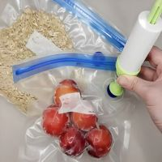
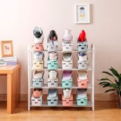
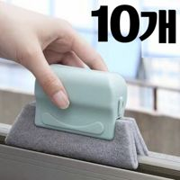
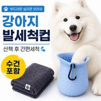
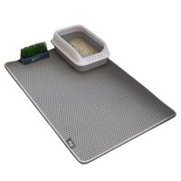
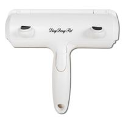

살림템 비교 #1
쿠팡에서 최신 가격·조건 보기
개봉한 식품 봉지를 집게로 물려도 공기가 차서 눅눅해지고 자꾸 풀린다
확인할 점 중형은 26×28cm, 쌀이라면 대형이요.
이 포스팅은 쿠팡 파트너스 활동의 일환으로, 이에 따른 일정액의 수수료를 제공받습니다.
영상 끝에 나온 번호를 찾아 보세요. 사기 전에 '확인할 점'을 꼭 읽어 주세요.
링크·조건 점검 기준일 2026-10-09 · 가격과 재고는 쿠팡 페이지가 최신이에요.

확인할 점 중형은 26×28cm, 쌀이라면 대형이요.

확인할 점 칸 높이만 재 두면 맞추기 편해요.
이 콘텐츠는 토스쇼핑 쉐어링크 활동의 일환으로, 링크를 통한 구매가 발생하면 일정 수수료를 지급받습니다.

확인할 점 창문 많은 집이라면 10개 돌려 쓰고 털어 말려요.

확인할 점 리뷰에선 뒤집어서 목욕 솔로도 쓴대요.

확인할 점 빗자루 대신, 밟으면 구멍으로 쏙.

확인할 점 가죽 소파엔 테이프가 낫다는 리뷰, 천인지 확인해 보세요.